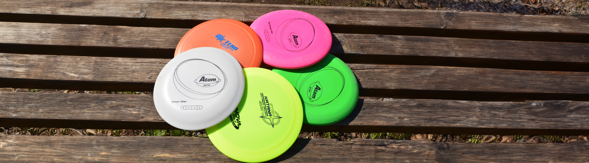

Aloittelijalle suunnattu opas frisbeegolfkiekoista!
Frisbeegolf on laji, jossa pelaajat heittävät frisbeegolfkiekkoja frisbeegolfradan väyliä pitkin koriin.
Radalla on yleensä 9-18 väylää ja voittaja on se, joka saa kiekon koriin vähimmällä määrällä heittoja.
Frisbeegolf on helppo laji aloittaa ja se sopii kaikenikäisille ja -kuntoisille ihmisille.
